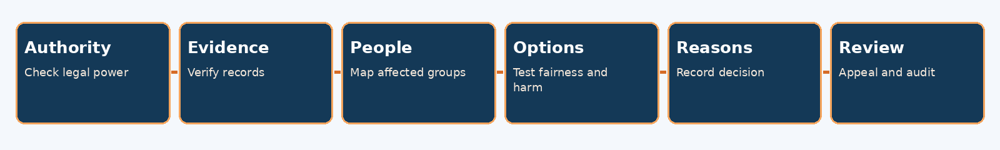
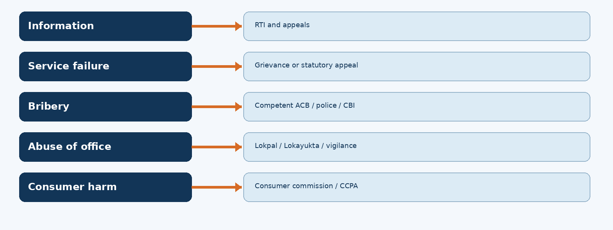

Ethics, Neutrality, Citizen Charters, Transparency, Anti-Corruption, RTI and Administrative Reforms
TGPSC Group I | Paper III | Unit III | Topic 5 | Expanded draft | 27 October 2026
ACADEMIC STATUS: NOT APPROVED. All 25 MCQs and six mains questions are original practice material. No verified official PYQ is claimed. This manuscript has undergone structural and internal source checks, not a full subject-expert audit.
Study route: syllabus map → detailed concept chapters → diagrams and tables → standalone quick revision → explained MCQs → structured mains practice → evidence register.
Paper III · Unit III · Topic 5 — Ethics, Transparency and Administrative Reforms
Official syllabus label (Notification 02/2024, Annexure II, Paper III, Governance, item 5): Ethics and Values of Administration; Neutrality of Civil Services, Committed Bureaucracy, Politician and Civil Servant Relations; Citizen Charters, Gender Sensitization; Transparency and Accountability of Administration; Prevention of Corruption in Administration—Central Vigilance Commission, Central Bureau of Investigation, Lokpal, Lokayuktha, ACB and Consumer Protection Mechanisms; Application and Impact of Right to Information Act 2005; Administrative Reforms.
Syllabus verification status: Exact wording cross-checked against published reproduction of Notification 02/2024; original TGPSC-hosted official PDF not independently downloaded in this run. This is a production draft, not academically approved.
Coverage map
| Syllabus clause | Full-note chapters | Expected exam reasoning |
|---|---|---|
| Ethics and values | 1–2, 5 | Legal versus ethical duty; dilemmas and safeguards |
| Neutrality, committed bureaucracy, political relations | 3–4 | Constitutional commitment, written orders, responsibility |
| Citizen Charters | 6 | Sevottam, measurable standards and remedies |
| Gender sensitisation | 7 | POSH, substantive equality and accessible services |
| Transparency and accountability | 8 | Institutional chain, audit, social accountability |
| Corruption prevention | 9–13 | PC Act, CVC, CBI, Lokpal, Telangana Lokayukta/ACB/vigilance |
| Consumer protection mechanisms | 14 | 2019 Act, CCPA, consumer commissions |
| RTI 2005: application and impact | 15–16 | Deadlines, appeals, exemptions, 2025 privacy amendment, Telangana practice |
| Administrative reforms | 17–18 | ARC, citizen-centric reforms, evaluated outcomes |
Topic summary
This topic studies the transformation of state power from an opaque hierarchy into a system that must justify decisions to citizens. Administrative ethics sets standards of fairness and public interest; service neutrality keeps lawful implementation independent of party allegiance. Citizen Charters and gender-sensitive procedures translate values into observable services. Transparency, audit, RTI and appeals expose decisions to scrutiny, while vigilance, police investigation, ombudsmen and consumer institutions supply different remedies. The Prevention of Corruption Act and related statutes define offences and institutional competence; they do not replace procedural fairness. Telangana provides practical examples through its Vigilance Commission, ACB, Lokayukta, Information Commission, district administration and service portals. Reforms succeed only when citizens receive correct, accessible and timely outcomes rather than impressive announcement counts.
How to study
First read chapters 1–8 to build the values-to-service framework; then compare institutions in chapters 9–14; then practise RTI routing and the 2025 legal change in chapters 15–16; finally answer reform and case-study questions using chapters 17–18. The quick revision is standalone, while the detailed chapters provide evidence and argumentation. All MCQs below are original practice, not verified official PYQs.
Detailed textbook notes
1. Public-service ethics: why legality is necessary but insufficient
Meaning and intellectual background. Public administration is the organised use of state authority to deliver collective decisions. Ethics asks not merely whether an officer can legally act but whether the action is justified to every person affected by it. A land-record correction may comply with a prescribed workflow yet still be ethically deficient if an elderly applicant cannot access the online portal, if the reasons for refusal are unintelligible, or if a politically connected applicant receives priority. Legality fixes minimum enforceable duties; public ethics additionally evaluates fairness, proportionality, integrity, empathy, restraint and the treatment of persons as citizens rather than clients of an official. The constitutional basis is concrete: Article 14 prohibits arbitrary state action; Article 21 protects life and personal liberty through fair procedure; Article 16 demands equal opportunity in public employment; the Directive Principles orient policy toward social welfare. The Preamble's justice, liberty, equality and fraternity provide the normative compass. These are not interchangeable with a civil servant's personal moral preferences.
Three ethical lenses. A duty-based approach insists on following lawful procedure and respecting rights even where shortcuts appear convenient. A consequence-based approach asks whether a decision reduces deprivation, delay and waste. A virtue approach examines the officer's stable habits—truthfulness, courage, moderation, public spirit and willingness to acknowledge error. Consider a district hospital's shortage of medicines. Duty ethics forbids diverting public stocks to a private clinic; consequences require triaging urgent patients; virtue ethics demands that the officer disclose the shortage rather than conceal it. A sound administrative decision integrates all three, documents the trade-offs and remains open to independent review. A purportedly benevolent violation of procurement rules can facilitate favouritism; rigid rule-following without emergency discretion can cost lives. Ethical reasoning therefore needs explicit authority, evidence, necessity and accountability.
Institutional rather than heroic ethics. Reliance on a single 'honest officer' is fragile. Transfers, informal pressure, fragmented files and discretionary exceptions can neutralise personal integrity. Institutional safeguards include written reasons, e-office audit trails, separation of sanction and payment functions, procurement competition, disclosure of conflicts of interest, protected reporting, social audits, accessible appeals and periodic inspection. The Second Administrative Reforms Commission (Second ARC), Fourth Report, Ethics in Governance (January 2007), treats ethics as a systemic issue spanning politics, bureaucracy, corruption control and citizen empowerment [S01]. A robust ethical environment aligns incentives: officials should not be rewarded solely for spending budgets or meeting numerical targets when those measures hide exclusions.
Telangana illustration. Suppose a Mandal Revenue Officer receives competing claims over a mutation after a death. Ethical administration does not presume that the most digitally literate claimant has the strongest legal right. The officer must verify underlying records, give notice to interested persons, preserve a speaking order, avoid ex parte contact and explain the statutory appeal. Digitisation can reduce tampering but cannot replace hearings where title is contested. Conversely, endless 'manual verification' can become a source of rent-seeking. A transparent exception register and time-stamped decisions protect both citizen and officer.
Competing positions and consequences. Some argue that strict neutrality and uniform rules protect equality; others stress substantive equity, because identical treatment can perpetuate historic disadvantage. The practical answer is rule-bound accommodation authorised by law—accessible formats, assisted filing, disability accommodations, language support and transparent priority criteria. Public ethics is tested most sharply when an apparently efficient action transfers hidden costs to the least powerful. In a mains answer, distinguish legal compliance, ethical justification and measurable outcomes; then show how reasons, remedies and public scrutiny connect them.
2. Core administrative values and ethical dilemmas
Value vocabulary. Integrity means coherence between public duty and conduct, including refusing improper benefit and declaring interests. Honesty concerns truthful records and communication; objectivity requires evidence-based judgments; impartiality requires that political identity, caste, gender or personal connections not distort service decisions. Accountability is the obligation to explain and face consequences. Responsiveness means timely attention to legitimate needs; compassion means understanding disadvantage without bypassing lawful entitlement criteria. Courage is not defiance for its own sake but a documented refusal to obey an unlawful instruction. Confidentiality protects sensitive data, while transparency exposes the basis of public decisions. These values can conflict, which is why slogans alone are poor exam answers.
A method for resolving dilemmas. First identify the statutory power and non-negotiable constraints. Second map stakeholders, especially persons unable to represent themselves. Third distinguish verified facts from assumptions and specify missing evidence. Fourth generate options—including referral, recusal, consultation, temporary relief and escalation—not merely 'obey or disobey'. Fifth test each option for legality, equal treatment, foreseeable harms, reversibility and public defensibility. Sixth record reasons and establish a review mechanism. If a superior demands that a supplier's invoice be passed without inspection, the officer should request written direction, preserve evidence, invoke relevant financial rules and escalate through lawful channels; public allegations without evidence can harm due process.
Conflicts of interest. A conflict is a situation in which private interests may improperly influence public duties, even if actual corruption is unproven. A procurement committee member whose sibling owns a bidding company should disclose the relationship and normally recuse from evaluation. Financial interest, family ties, future employment prospects and privileged information all matter. Recusal alone may not cure a structurally compromised tender: independent re-evaluation and a record of communications may be needed. Gift registers, asset disclosures and cooling-off restrictions are preventive devices, subject to applicable service rules rather than invented universal thresholds.
Ends, means and discretion. Consider a flood relief officer facing a damaged road and a strict supply protocol. Delay may create serious harm; an emergency procurement provision may permit a limited departure if urgency is documented, rates are checked and post-facto scrutiny occurs. Invoking 'public interest' cannot create a power absent from law. Equally, officers should not hide behind process where lawful emergency powers exist. A meaningful ethical audit asks who benefited, who was excluded, whether discretion was proportionate, and whether an independent person could reconstruct the decision.
Telangana applications. In a welfare enrolment drive, an operator may be tempted to approve incomplete records to meet a target. Unverified approvals create later recoveries and discredit the scheme; rigid rejections can deny urgent support. The solution is a transparent pending category, assisted document collection, provisional benefits only where rules allow, and grievance escalation. In recruitment, publishing objective criteria before evaluation is more valuable than merely promising impartiality afterwards. In a municipal demolition, notice, proportionality and humane rehabilitation safeguards matter alongside enforcement authority.
Critical appraisal. Ethics training can improve vocabulary but may have little effect where transfer threats, opaque promotions and unreviewable discretion remain. Conversely, automated controls can block some bribes but also conceal bias in algorithms. A mature administrative culture combines individual responsibility, whistleblower channels, fair disciplinary processes and open data without assuming that every complaint proves guilt. Exam responses should name the dilemma, explain conflicting values, choose a lawful option and specify an auditable implementation path.
3. Neutral civil services versus committed bureaucracy
Constitutional setting. A permanent civil service operates under governments formed by elected representatives. Ministers legitimately determine policy within law; officers provide evidence, implement lawful decisions and serve the public regardless of party. Neutrality means political non-partisanship in official conduct, not indifference to constitutional goals. An officer should implement a welfare policy adopted by a new government with the same professionalism used under its predecessor. Neutrality is supported by service conduct rules, merit recruitment and security-of-tenure principles; it does not make an officer unaccountable to democratic leadership. Article 311 provides specified procedural protections against dismissal, removal or reduction in rank, subject to constitutional exceptions; it is not blanket immunity.
Committed bureaucracy: two meanings. 'Commitment' may mean fidelity to the Constitution, law and public welfare, which is compatible with neutrality. Historically, the phrase has also been used to suggest ideological loyalty to a ruling party or leader. That second meaning undermines equal treatment, candid advice and administrative continuity. A civil servant can be strongly committed to eliminating malnutrition while refusing to manipulate beneficiary lists to favour party supporters. The distinction is essential: loyalty to constitutional ends is an obligation; loyalty to partisan electoral success is not an official function.
The minister–secretary bargain. Elected ministers possess political legitimacy and answer to the legislature. Secretaries supply continuity, specialist analysis, interdepartmental coordination and lawful implementation. A healthy relationship permits vigorous private disagreement followed by faithful execution of a lawful decision. The officer should present options, fiscal implications, distributional effects and legal risks in a written note. Once the minister selects a lawful option, personal disagreement is not a licence to sabotage it. If the instruction is illegal, the officer should seek clarification, put concerns on record and use designated escalation mechanisms. The 1964 Central Civil Services (Conduct) Rules provide a central-service reference; All India Services and Telangana services have their own applicable rules [S02].
Transfers and the fear of dissent. Frequent arbitrary transfers can reward pliability, erode institutional memory and encourage short-term decisions. Yet absolute tenure may shelter poor performance or local capture. The Supreme Court's T.S.R. Subramanian v Union of India (2013) judgment addressed written instructions and civil-service boards, emphasising protection against arbitrary oral directions; implementation and service-specific rules still require checking. An officer who insists on written instructions is not thereby opposing the government: the record protects ministerial accountability as well as professional integrity. Promotion should reward evidence-based service outcomes, not partisan proximity.
Telangana case frame. A district officer asked to publicise a scheme can provide factual eligibility information through official channels, but cannot use government resources for partisan campaign messages. During election periods, the Election Commission's Model Code of Conduct and service rules constrain conduct. In land allocation or recruitment, an officer must apply the notified criteria even if political representatives urge exceptions. Ministers may lawfully revise criteria prospectively through competent authority, but an ad hoc oral direction cannot displace statutory requirements.
Competing interpretations. Critics of bureaucratic neutrality note that 'apolitical' officials may preserve inherited social inequalities or frustrate elected redistributive mandates. Critics of committed bureaucracy fear politicisation, patronage and the suppression of inconvenient evidence. The resolution is constitutional commitment with political impartiality: proactive delivery of democratically enacted policies, candid advice, fair treatment and traceable orders. Mains answers should separate policy choice (political), policy advice (professional), lawful implementation (administrative) and independent review (institutional).
4. Politician–civil servant relations and administrative responsibility
Allocation of responsibility. Parliamentary government depends on ministers answering to elected houses for departmental action, while individual officials face service discipline, audit, judicial review and sometimes criminal liability. These are different accountability channels. Ministerial responsibility does not erase an officer's obligation to refuse corruption; bureaucratic expertise does not authorise an officer to substitute private policy preferences for elected choices. Files and minutes create a chain of reasons, but signatures should correspond to genuine review rather than ritual approval.
Four recurring friction points. First, policy advice may be unwelcome when it reveals fiscal limits or legal defects. Second, appointments and transfers may become instruments of patronage. Third, field officers may face constituency demands inconsistent with eligibility rules. Fourth, administrative delay may be wrongly blamed on politics or used by officials to defeat a lawful policy. The institutional response differs: independent analysis for policy, objective transfer criteria for personnel, published eligibility and appeals for benefits, and performance dashboards with quality checks for implementation.
Oral instructions and file culture. Not every conversation can be written, but a consequential decision needs a durable record. An officer receiving an unusual direction should ask for written confirmation, describe the governing rule, propose lawful alternatives and document the final competent order. Recording is not an act of disloyalty. It clarifies responsibility, helps a successor understand the case and allows an auditor to distinguish genuine urgency from favouritism. An official should avoid leaking confidential deliberations merely to win a policy argument; transparency rules, public-interest disclosure channels and judicial processes determine what may lawfully be released.
Responsibility when things go wrong. Imagine a flood-control contract in Telangana that overruns cost. The minister may be answerable for programme design and appropriations; engineers for estimates and quality assurance; procurement officials for tender compliance; contractors for contractual performance; auditors for reporting detected irregularities. A blanket statement that 'the government failed' is analytically weak. Root-cause analysis should reconstruct decision dates, warnings, variations, inspections, approvals and citizen impacts. If an officer was pressured, contemporaneous written objections matter; if the officer colluded, claiming obedience is not an ethical defence.
Accountability without paralysis. Overcriminalising every bona fide error can make officials refuse difficult decisions, while broad immunity can conceal graft. The Prevention of Corruption Act's Section 17A addresses prior approval for specified inquiry/investigation relating to recommendations or decisions in discharge of official duties, with statutory exceptions and interpretation issues [S08]. This is not a blanket shield for every bribe allegation. Service discipline, vigilance review, audit and criminal prosecution operate under different standards and should not be collapsed into a single category.
Practical reforms. Improve ministerial briefings with alternative options and explicit risk registers; publish objective transfer and procurement norms; use digital note sheets with role-based access; set service deadlines and appeal rights; and train elected representatives and officials together on the legal boundaries of discretion. A high-quality answer concludes that democratic responsiveness and professional independence are complements when both are constrained by law and made answerable to citizens.
5. Conduct rules, conflicts of interest and whistleblowing
From ideals to enforceable obligations. Ethics codes express values, whereas conduct rules create specific duties that can trigger disciplinary proceedings. Central Civil Services (Conduct) Rules, 1964, and All India Services (Conduct) Rules, 1968, are central reference frameworks; state employees must follow the relevant Telangana rules and departmental instructions. Restrictions on political activity, improper gifts, misuse of office, private employment, unauthorised disclosure and behaviour unbecoming of service are designed to protect public trust. The exact threshold or permission requirement must be checked in the rule applicable to the officer and date; a generic coaching note should not invent uniform rupee limits.
Disclosure and recusal architecture. Effective prevention begins before a tender is awarded. Identify beneficial ownership of vendors, require committee declarations, log contact with bidders, segregate specification-writing from bid evaluation where feasible, publish criteria and record reasons for departures. Post-employment employment opportunities can bias present decisions; appropriate cooling-off and approval requirements mitigate that risk. Conflict of interest is broader than a proven offence: the appearance of a conflict can justify recusal even where no money changes hands. But unsubstantiated allegations should not automatically destroy a public servant's reputation.
Whistleblowing and procedural fairness. The Whistle Blowers Protection Act, 2014, is part of the legislative landscape, but its commencement and operational status should not be assumed merely from enactment. Central Vigilance Commission mechanisms for protected disclosures and the Public Interest Disclosure and Protection of Informers Resolution (PIDPI) are relevant in central-government contexts; their jurisdiction is not a universal channel for Telangana state officials. A credible mechanism requires confidentiality, retaliation safeguards, independent preliminary assessment and consequences for malicious fabrication. An officer reporting suspected tender rigging should preserve original documents and use the competent reporting route, not circulate citizens' personal data indiscriminately.
An integrity test for a district purchase. Suppose a hospital superintendent discovers that a tender evaluator previously worked for the winning supplier. A defensible sequence is: verify the relationship; preserve bid and evaluation records; determine whether disclosure was required; secure an independent review; assess whether the tender outcome was materially affected; and allow the persons concerned to respond. Cancelling every procurement based on rumour can interrupt essential supplies; ignoring the conflict can institutionalise collusion. Proportional, evidence-led action protects both integrity and service continuity.
Institutional limits. Mandatory disclosures can become paper exercises, anonymous complaint systems can be abused, and technology can centralise surveillance without improving fairness. The Second ARC's ethics recommendations therefore belong alongside improved investigation quality, prosecution capacity, simpler procedures and public reporting [S01]. Ethics enforcement should measure sustained reductions in arbitrary exceptions, repeated vendor concentration and unresolved complaints rather than raw numbers of vigilance cases alone.
6. Citizen Charters, Sevottam and service guarantees
Origins and purpose. A Citizen Charter states what services a public authority provides, who is eligible, the documents and fees required, expected time standards, responsible officers and grievance remedies. Its logic reverses the traditional 'favour from an office' relationship: citizens should know what they may demand and how to challenge failure. Indian charter initiatives drew on international public-service reforms and were institutionalised through government guidance. The Department of Administrative Reforms and Public Grievances (DARPG) promotes charter quality and grievance-redress standards; the Sevottam model links citizen charters, grievance redress and service-delivery capability [S03]. A charter is not automatically a statute, so a promise on a noticeboard does not itself create a legal compensation right unless a law or rule supplies one.
Designing a usable charter. Start with service mapping: birth certificates, caste or income certificates, pension verification, land-record copies, water connections and building permissions have different decision points. Define an observable trigger for the clock, identify permissible pauses for applicant deficiencies, specify the deciding authority and publish escalation contacts. Standards must be tested with users, especially rural women, persons with disabilities and people with limited literacy. Display information in Telugu and other relevant languages; offer assisted digital channels. A single 'seven-day service' headline is misleading if the clock starts only after an undisclosed preliminary inspection.
Sevottam's management cycle. The 2011 DARPG guidelines emphasise service standards, citizen-facing feedback, grievance mechanisms, organisational capability and periodic assessment [S03]. Operationally, agencies should measure both timeliness and correctness. A municipal office that disposes of 95% of applications by rejecting them without reasons may score well on speed while failing public service. Publish median and long-tail processing times, first-time approval rates, reasoned-rejection rates, appeal overturns and citizen-reported accessibility. Assign staff responsibility for systemic fixes, not only individual complaints.
Telangana service example. A MeeSeva-style certificate workflow can offer online submission, payment receipts, status tracking and electronic delivery. However, backend land or revenue records may be contested, connectivity may fail, and outsourced operators may charge unauthorised fees. A credible charter therefore distinguishes platform uptime from the legally competent officer's adjudication, requires fee receipts, permits accessible offline assistance and gives a route to challenge a reasoned rejection. Public dashboards should report performance by district, not only statewide averages that conceal exclusion.
Critiques and remedies. Charters can be drafted without citizens, promise impossible deadlines, lack enforcement and use vague phrases such as 'prompt service'. Contracting service counters to private operators can shift accountability unless the department retains control over eligibility, data protection and appeals. Statutory public-service guarantee laws in some jurisdictions create stronger remedies; the applicable Telangana position must be verified service by service rather than assumed. The key distinction is promise → measurable standard → independent grievance remedy → corrective learning. A mains answer should assess actual implementation, not just list charter principles.
7. Gender sensitisation and equality in administration
Substantive meaning. Gender sensitisation is the redesign of administrative behaviour and institutions to recognise unequal risks, access barriers and power relations. It is not a ceremonial lecture on respecting women. Constitutional Articles 14, 15 and 16 support equality and non-discrimination; Article 15(3) permits special provisions for women and children; Article 21 protects dignity. The Sexual Harassment of Women at Workplace (Prevention, Prohibition and Redressal) Act, 2013 (POSH), requires relevant workplace mechanisms, including Internal Committees in covered establishments and Local Committees in specified circumstances. Gender-sensitive administration also considers transgender persons under applicable law, persons with disabilities and intersecting caste/class disadvantage rather than treating women as a homogeneous group.
From headcounts to service design. A department may employ women yet remain unsafe because field travel, toilets, lighting, transfer policy and complaint confidentiality are ignored. Gender budgeting asks who benefits from expenditure and who bears unpaid care costs. A public hospital's 'free maternal service' can be inaccessible if transport, companion needs or lost wages are ignored. Police-station reception, trauma-informed interviewing, privacy of survivors and safe referral protocols matter as much as staffing. The Protection of Women from Domestic Violence Act, 2005, and POSH Act create distinct legal routes; a workplace complaint is not the same as a domestic-violence proceeding.
Administrative safeguards. Set up properly constituted complaint committees, train members on procedural fairness, avoid retaliation and keep identities confidential within legal limits. Publish safe complaint channels and time frames without exposing personal details. Use sex-disaggregated data where lawful, but avoid collecting unnecessary sensitive data. For a welfare programme, compare application, approval, payment and grievance outcomes by gender and district; large differences may reveal documentation burdens, mobile-phone ownership gaps or biased discretion. An effective intervention might be assisted enrolment, women-friendly service hours or direct communication of benefit decisions.
Telangana illustration. Consider a woman seeking mutation of inherited agricultural land. Officials should not presume male relatives are authorised to speak for her. Verify legal succession, explain documents in a language she understands, permit private communication when coercion is suspected and provide appeal information. Similarly, women working in municipal sanitation require safe equipment, facilities and a credible harassment redress mechanism. These measures are operational equality, not exceptions to law.
Competing viewpoints. Some argue that gender-specific accommodations undermine formal equality; others note that nominally identical procedures disadvantage those facing unequal mobility, care burdens or violence. Constitutionally permitted, proportionate accommodation can achieve substantive equality while preserving objective eligibility. Sensitisation without enforceable workplace rules, budgeted facilities and monitoring risks becoming performative. In an answer, connect legal rights, organisational redesign, measurable access and due process for all parties.
8. Transparency and accountability: an institutional chain
Different concepts. Transparency is the availability of intelligible information about decisions, expenditure and performance. Accountability requires an actor to explain decisions before a forum that can question, correct or sanction. Publicity without enforceable answerability is not enough. Horizontal accountability operates among state institutions—legislature, audit, courts, vigilance and information commissions. Vertical accountability arises through elections and citizen participation. Social accountability uses public hearings, social audits, community monitoring and media scrutiny. Internal accountability includes supervision, inspections and disciplinary systems. Each channel has different evidence standards and remedies.
Tools and causal mechanisms. Proactive disclosure of tender notices, award criteria and payments can deter collusion by increasing detection risk. Digitised workflows reduce opportunities for undocumented file movement, but may simply move discretion into inaccessible algorithms. Legislative questions and Public Accounts Committee examination can reveal systemic spending failures; CAG audit highlights irregularities but does not itself convict anyone. RTI allows citizens to request existing records; it does not compel creation of new explanations beyond the law's scope. Grievance systems seek service correction, whereas criminal investigations address offences. A well-designed administration routes the right complaint to the right forum.
Procurement example. For a district road, publish the tender, eligibility criteria, bid comparison, contract variations, quality tests and completion certificates subject to lawful exemptions. Citizens can compare billed length with actual work; engineers can record defects; auditors can review payments; investigators can examine evidence of bribes. A public dashboard should identify whether a complaint is merely registered, factually verified, remedied or closed with reasons. Counting closure as success without independent quality review creates a perverse incentive to dismiss grievances.
Limits and tensions. Transparency may conflict with legitimate privacy, security, commercial confidentiality and fair investigation. An agency should redact narrowly protected personal details rather than deny an entire public-interest record where severability applies. Overdisclosure can endanger complainants; secrecy can protect wrongdoing. Good governance requires a reasoned balancing exercise under the applicable statute. An opaque 'national interest' label cannot replace a statutory exemption test, and an unqualified 'everything must be public' claim ignores privacy rights.
Telangana relevance. Publishing district-wise welfare exclusion reasons, service-charter performance and procurement variations could expose both administrative error and unequal access. However, releasing Aadhaar numbers, medical records or complainant addresses would create harm. The practical model is open aggregate performance, auditable decision criteria, secure individual access and independent appeal. An exam answer should explain the chain disclosure → scrutiny → answerability → correction/sanction → institutional learning, with a warning that disclosure alone does not guarantee reform.
9. Corruption: forms, incentives and the Prevention of Corruption Act
Definitions and patterns. Corruption is misuse of entrusted public power for improper private or group benefit. Petty bribery occurs at service counters; grand corruption involves major contracts or policy capture; collusion can connect contractors, officials and intermediaries; nepotism and patronage allocate benefits on personal or political ties. Extortion differs from voluntary collusion, and poor performance is not automatically corruption. A careful inquiry distinguishes a bona fide mistake, misconduct, conflict of interest and a criminal offence. Evidence, mental elements and statutory definitions matter.
Political economy. Monopoly control over permissions, high discretion, opaque rules and weak accountability create opportunities for rent extraction. But eliminating discretion altogether can cause harsh outcomes in complex cases. Simplified procedures, risk-based inspections, transparent lotteries where appropriate, competitive procurement, electronic payments, audit trails and protected reporting reduce opportunities. Merely increasing penalties without improving detection, witness protection and trial speed may not deter wrongdoing. Anti-corruption campaigns must avoid equating case registrations with convictions.
Statutory framework. The Prevention of Corruption Act, 1988, substantially amended in 2018, includes Section 7 (public servant being bribed), Section 8 (bribing a public servant), Section 9 (bribery by commercial organisations), Section 13 (defined criminal misconduct), Section 17A (prior approval for certain inquiries/investigations connected to official decisions, with exceptions) and Section 19 (previous sanction for prosecution in specified cases) [S08]. The amendment reshaped the offences; using pre-2018 descriptions without qualification is unsafe. A citizen coerced into paying a bribe may encounter statutory reporting protections and conditions; the facts and timing matter. Section 17A is not a universal precondition for every trap case, and sanction questions should be evaluated under the current statutory text and case law.
Telangana operational case. A clerk demands money to release a certificate already approved. The complainant should preserve messages, receipts and application identifiers and approach the competent Anti-Corruption Bureau or police channel; attempting a self-designed 'trap' risks evidentiary and safety problems. A separate service grievance can seek the certificate, but it does not replace criminal investigation. Investigators must document demand, acceptance and other legally required elements. A conviction cannot be presumed from an allegation or viral video.
Reform debate. Vigorous enforcement can restore trust, but politically selective investigations and sensational publicity can damage rule of law. Investigative independence, judicial oversight, transparent statistics, defence rights and protection against retaliation are therefore part of anti-corruption design. The most durable strategy combines prevention, detection, proportionate sanctions and service redesign, not raids alone.
10. Central Vigilance Commission: prevention and supervision
Legal origin and nature. The Central Vigilance Commission (CVC) began as an executive body in 1964 following the Santhanam Committee's anti-corruption recommendations and acquired statutory status through the Central Vigilance Commission Act, 2003. It is not a constitutional commission and is not a general anti-corruption court. Its central-government vigilance remit must be distinguished from the jurisdiction of Telangana's state vigilance and anti-corruption bodies. Its design reflects a preventive insight: integrity risks arise in procurement, recruitment, contracting and disciplinary processes long before a criminal trial becomes possible. The CVC can advise and exercise specified supervisory functions, but its advice is not itself a criminal conviction [S09].
Institutional design. The CVC consists of a Central Vigilance Commissioner and up to two Vigilance Commissioners under the statutory framework. It exercises superintendence over the functioning of the Delhi Special Police Establishment in relation to investigation of offences under the Prevention of Corruption Act, subject to the statutory distribution of powers. It also reviews progress of certain investigations and prosecutions and advises specified central organisations on vigilance matters. Chief Vigilance Officers (CVOs) inside departments and public-sector organisations are important nodes for preventive vigilance, complaint screening, inspections and follow-up. The distinction matters: the CVC is an oversight/advisory institution; the CBI's investigative powers derive principally from the DSPE Act; prosecutors and courts operate under separate laws.
Preventive vigilance in practice. A central public-sector undertaking can reduce contract risk by requiring vendor due diligence, clear technical specifications, e-tendering, independent inspection, rotation of sensitive posts and monitoring of unusually concentrated awards. CVO review should identify system defects—ambiguous eligibility clauses, repeat single-bid tenders, split purchases and delayed payments—rather than simply produce disciplinary statistics. Integrity pacts and external monitors may be used in appropriate procurement settings, but they do not substitute for fair tender design or statutory remedies. An advisory warning is useful only if the organisation implements it and checks results.
Jurisdictional and constitutional cautions. A Telangana state department is not automatically subject to CVC directions merely because the alleged conduct resembles corruption. Central agencies, central public-sector undertakings and covered personnel fall under specified jurisdiction; state ACB, Lokayukta and departmental vigilance have different legal foundations. The CVC cannot ordinarily compel an unrelated state collector to decide a land mutation. It also cannot be described as having unlimited supervisory authority over all CBI investigations; the governing Act identifies the relevant anti-corruption sphere and preserves other statutory functions.
Critique. A commission that issues recommendations without timely departmental compliance can become a paper regulator. Conversely, unreviewable vigilance instructions may make honest officials risk-averse. Public reporting should distinguish complaints received, cases referred, departmental action, prosecution status and convictions. For mains, explain the CVC's statutory origin, preventive role, relationship with CVOs and CBI, jurisdictional limits and the need for stronger follow-up mechanisms.
11. CBI and the Delhi Special Police Establishment Act
Origin and statutory foundation. The Central Bureau of Investigation (CBI) was established by executive resolution in 1963; the Delhi Special Police Establishment Act, 1946 (DSPE Act), supplies the core legal basis for its police powers. It investigates specified corruption cases, economic offences and other serious crimes according to lawful jurisdiction and referrals. Calling it a constitutional body is incorrect. The CBI has distinct investigative branches, and its authority in a particular state depends on statute, consent and judicial directions. Its institutional role should not be confused with the CVC's vigilance advice or the Lokpal's complaint-inquiry framework.
Federalism and consent. Section 5 of the DSPE Act permits extension of powers to areas and offences under the statutory scheme; Section 6 generally requires state-government consent before DSPE members exercise powers in a state outside specified exceptions [S10]. Consent can be general for classes of cases or case-specific, depending on current orders. Constitutional courts may direct a CBI investigation without state consent in appropriate cases; that exceptional judicial power should not be presented as ordinary executive jurisdiction. A Telangana state official accused of bribery does not automatically fall under CBI investigation merely because corruption is serious.
Investigation versus prosecution. Investigators collect documents, examine witnesses, follow financial trails, conduct lawful searches and present reports. Prosecutors assess admissibility and sufficiency of evidence; courts decide guilt after trial. A charge sheet is not a conviction, and an acquittal does not necessarily prove that the complaint was malicious. Under anti-corruption law, proof of demand, acceptance, official status, sanction and statutory presumptions may become central depending on the charged offence and facts. These legal elements must not be replaced by simplistic media descriptions.
Autonomy debate. Independence protects investigations from political interference, while accountability prevents investigators from becoming an unreviewable power centre. Relevant safeguards include transparent selection and tenure arrangements, judicial supervision where warranted, internal discipline, reasoned closure reports and protection of witness rights. Proposals for wider CBI jurisdiction encounter federal concerns: states retain police responsibilities, while cross-border and high-level offences may require coordination. The policy problem is to secure credible investigations without erasing constitutional distribution of powers.
Telangana example. A suspected cartel in a centrally funded procurement might involve departmental audit, central vigilance, CBI or state agencies depending on ownership, officials involved, offences, consent and court orders. The correct first question is not 'which agency is famous?' but 'what offence, which persons, which statutory jurisdiction, what consent and what evidence?' That framework earns marks because it converts a list of institutions into a legally defensible analysis.
12. Lokpal, Lokayukta and the ombudsman idea
Ombudsman logic. An ombudsman receives complaints about misuse of public office and provides a channel outside ordinary departmental hierarchy. The Lokpal and Lokayuktas Act, 2013, created the national Lokpal framework; its Act number is 1 of 2014 because it received assent on 1 January 2014 and commenced in January 2014 [S11]. The Lokpal's jurisdiction extends to specified central public functionaries, including the Prime Minister subject to statutory safeguards and exclusions, ministers, members of Parliament and categories of central officials. Its role is not identical to a trial court, a general administrative appeal tribunal or an RTI commission.
Institutional process. A complaint must satisfy applicable form, limitation and jurisdiction requirements. Under the statutory framework, preliminary inquiry, investigation, opportunity to respond, prosecution and departmental action follow distinct steps. The Lokpal may refer matters to agencies within the statutory scheme; it does not replace all investigators. The requirement of due process is substantive: a public servant's reputation cannot be destroyed by an unsupported allegation, and the complainant should not face retaliation for a genuine disclosure. Public reporting should track substantiated outcomes, not merely filings.
Telangana's separate law. The Telangana Lokayukta Act, 1983, as adapted for the state, governs the state's Lokayukta/Upa-Lokayukta system [S12]. Its jurisdiction, excluded matters and procedures are defined by that Act and subsequent valid amendments; one should not assume that every grievance about a state official or private company is maintainable. The official Lokayukta website publishes the Act and Section 4(1)(b) RTI disclosures, illustrating the institution's own transparency obligations [S13]. Telangana's appointment of Lokayukta and Upa-Lokayukta officeholders in April 2025 is a dated institutional development; appointment alone does not establish effectiveness.
Distinguishing forums. A complaint that a certificate was delayed ordinarily begins with the competent service/grievance authority. A complaint alleging abuse of office may fall within Lokayukta jurisdiction if statutory conditions are met. A request for records belongs under RTI. An allegation of bribery may require ACB or other competent police investigation. A consumer's defective private product belongs under consumer protection mechanisms, not ordinarily the Lokpal. One factual episode can trigger more than one route, but each has different relief, proof and limitation rules.
Critical appraisal. Ombudsmen can bypass compromised departmental chains and strengthen confidence, but appointment delays, vacancies, limited investigative capacity and non-binding or procedurally constrained outcomes can blunt impact. Excessively broad jurisdiction may create backlogs, while narrow definitions leave accountability gaps. Effective design requires accessible complaint formats, independence, coordination with investigators, timely speaking orders, fair hearings and public statistics. The examiner expects a distinction between the national statute and Telangana's state-specific legal foundation, not a generic claim that both are identical anti-corruption bodies.
13. Telangana ACB, Vigilance Commission and local integrity architecture
Different state institutions. The Telangana Anti-Corruption Bureau (ACB) is a state law-enforcement/investigative mechanism dealing with corruption offences within its lawful remit. The Telangana Vigilance Commission is an independent advisory body established by state government order in March 2015, after bifurcation, to advise on integrity, misconduct and misuse of administrative power [S14]. The Telangana Lokayukta is governed by a separate state statute. These three should not be collapsed into a single 'anti-corruption commission'. The ACB investigates offences; the Vigilance Commission gives vigilance advice within its scheme; the Lokayukta examines matters within its statutory jurisdiction.
How a complaint should be analysed. Start with the alleged act: a demand for money, irregular procurement, misuse of official position, delayed service or disputed property rights. Identify whether it is a crime, departmental misconduct, administrative grievance or civil dispute. Preserve the original file number, payment trail, messages and witnesses without fabricating evidence. Select the competent forum and note possible parallel processes. An ACB investigation requires legally obtained evidence and prosecutorial scrutiny. An advisory vigilance reference may identify systemic weaknesses even where criminal proof is insufficient. A Lokayukta inquiry has its own admissibility and hearing requirements.
Prevention in Telangana departments. Revenue, municipal permissions, public works, welfare procurement and licensing may involve multiple approvals and local intermediaries. Prevention should map the points where citizens must contact officials, reduce avoidable discretion, publish legitimate fees, issue receipts and permit escalation. For example, a municipal trade-licence system should separate objective document checks from inspection-based judgments, assign random inspections where lawful, record reasons for rejection and audit repeated extensions. Eliminating cash counters can reduce one form of bribery while leaving influence over back-end approvals untouched.
Institutional checks and counterchecks. A state vigilance body needs access to timely records, but its advice should not prejudge criminal guilt. ACB operations need independence and procedural safeguards, including fair handling of accused persons. Departmental disciplinary authorities must decide cases under applicable service rules rather than treating press coverage as evidence. Legislative committees, CAG audit, judicial review, RTI disclosures and local media provide complementary oversight. Telangana's Vigilance Commission website states that its remit is advisory and identifies its 2015 establishment, an important source-based correction to the assumption that it is a constitutional body [S14].
Policy debate. High-profile trap cases can deter petty demands, but service redesign may prevent more incidents than episodic raids. A successful integrity programme should track repeat complaints at the same office, time to obtain services, percentage of reasoned refusals, procurement exceptions and actual case outcomes. Telangana-specific answers should identify the relevant state body, its legal character and the practical point at which citizens encounter it, while avoiding unverified claims about current officers or conviction rates.
14. Consumer protection as an accountability mechanism
Why it appears in a governance syllabus. Citizens are also consumers of goods and services, and failures by private providers or qualifying public-service suppliers can cause serious harm. The Consumer Protection Act, 2019, modernised consumer law, establishing a Central Consumer Protection Authority (CCPA), a three-tier system of consumer dispute redressal commissions and rules concerning product liability, unfair trade practices and misleading advertising [S15]. Consumer protection is not the same as an anti-bribery investigation: it primarily addresses consumer rights and remedies against sellers, service providers and unfair commercial conduct. Jurisdiction and maintainability depend on statutory definitions and the transaction, not merely whether the complainant is unhappy.
Institutional pathways. District, State and National Consumer Commissions hear matters within their jurisdiction; the CCPA addresses specified class-wide consumer-protection concerns. The 2019 Act and subsequent rules enable electronic filing; e-Daakhil has been used for online complaints [S16]. Consumers may seek remedies such as refund, replacement, compensation or directions concerning deficient service as permitted by law. Monetary jurisdiction thresholds have changed through rules; students should consult the currently applicable rules rather than memorise an outdated threshold from a 2019 coaching guide.
Administrative linkages. A government department procuring defective medical equipment may pursue contract remedies, audit action and possibly anti-corruption investigation if collusion is suspected. A patient purchasing a defective device may have a separate consumer remedy. A complaint against a purely sovereign function may raise maintainability issues that cannot be answered by simply saying 'all government services are consumer services'. The correct classification depends on consideration, the nature of service, exclusions and judicial interpretation.
Telangana examples. An online coaching platform promises a course but delivers substantially different material; the consumer may preserve advertisements, invoices, terms and communications and explore appropriate consumer remedies. A private diagnostic centre that bills for an unperformed test raises consumer and professional-regulation questions. A bribe demanded for a statutory certificate is principally a public-law and corruption issue, not automatically a consumer case. Distinguishing the remedies prevents wasted effort and shows examiners an understanding of institutional boundaries.
Limits and critique. Online filing can reduce travel and documentation burdens, but digital literacy, language barriers, case backlog and enforcement of orders still matter. Misleading advertisements increasingly involve influencers and digital interfaces; the Department of Consumer Affairs has issued guidelines on misleading advertisements and dark patterns [S15]. Consumer mechanisms complement, rather than replace, sector regulators, criminal law, administrative appeals and public grievance systems. A mains answer should trace consumer harm, jurisdiction, evidence, available remedy and implementation challenges.
15. RTI Act 2005: architecture, deadlines and exceptions
Democratic basis and statutory scope. The Right to Information Act, 2005, operationalises citizens' access to information held by or under the control of public authorities. Its preamble connects an informed citizenry with democratic accountability and anti-corruption while recognising competing interests in confidentiality [S04]. Section 2(f) defines 'information' broadly across records and electronic material; Section 2(j) covers inspection, copies and samples within the Act. Section 4 requires proactive disclosure of specified organisational and decision-related information. Section 6 governs requests; a citizen ordinarily need not give reasons for seeking information. RTI is a right to existing records, not a general power to demand that an officer create research, explain a policy anew or answer hypothetical questions.
Processing and appeal. Under Section 7, the ordinary response period is 30 days from receipt, with a 48-hour rule where information concerns life or liberty; the statute contains special routing and other exceptions that affect timing. Under Section 6(3), transfer to another public authority where appropriate should ordinarily occur within five days. Section 19 provides first appeal to the designated senior officer and second appeal to the relevant Information Commission; the first appeal is ordinarily filed within 30 days of the decision/expiry and second appeal within 90 days, subject to statutory provisions. Section 20 provides penalties for specified PIO defaults after due process. These are legal timelines, not promises that every case will finish within 30 days including appeals.
Exemptions and balancing. Section 8 lists exemptions involving, among other things, security, privileged information, commercial confidence, fiduciary relationships and personal information, subject to statutory qualifications and public-interest tests. Section 9 concerns certain copyright-related grounds; Section 10 permits severance of exempt portions; Section 11 governs third-party consultation in specified cases. Blanket rejection of a whole file because one field is protected is often analytically wrong where severance is possible. Conversely, the public interest in monitoring a welfare programme does not automatically justify releasing beneficiaries' medical records or personal identifiers. PIOs should cite the applicable provision and give appeal information.
Important 2025 legal update. Section 44(3) of the Digital Personal Data Protection Act, 2023, amended Section 8(1)(j) of the RTI Act. The Gazette notification G.S.R. 843(E), dated 13 November 2025, brought Section 44(3) into force on publication [S17, S18]. Therefore, an answer that reproduces the pre-amendment personal-information clause as the only current wording is outdated. The reform has provoked a genuine debate: supporters emphasise privacy and protection against unnecessary disclosure; critics worry that broader withholding of personal information may impede scrutiny of public officials. The exact amended text, the other clauses of Section 8, Section 8(2) and relevant judicial interpretation must be read together. Do not assume that the entire DPDP Act commenced in November 2025; its commencement was phased.
Limits of RTI. Section 24 excludes specified intelligence/security organisations subject to statutory corruption and human-rights qualifications. Section 22 gives the RTI Act overriding effect in case of inconsistency, but that does not abolish its own exemptions. A PIO is not a criminal investigator and an Information Commission does not award all forms of compensation for underlying administrative wrongs. RTI can expose missing inspection reports; a separate competent authority must repair a defective bridge or prosecute corruption. For mains, explain rights, process, exceptions, proactive disclosure and the difference between information access and substantive remedy.
16. RTI in Telangana: practical use, privacy and evidence
Which portal and authority? The central DoPT RTI Online portal expressly warns that it is for central public authorities and should not be used for state-government bodies [S05]. Telangana departments fall under the state RTI framework and Telangana State Information Commission, subject to the statute. Telangana's official state portal hosts RTI information and lists the Chief Information Commissioner and commissioners [S06, S07]. In 2025 the state filled several Information Commission positions after a prolonged vacancy period; the current official roster should be checked when preparing an application rather than copying names from old notes. Institutional staffing is a capacity condition, not proof that all appeals are resolved.
A worked application. A resident suspects that a village road was billed as completed although its drainage remains unfinished. A targeted Section 6 request could seek the administrative sanction, tender award, work order, measurement-book extracts, quality-inspection reports, payment vouchers and completion certificate for a defined project and date range. The request should identify the public authority and records, not demand 'Why are officers corrupt?' The applicant should retain proof of filing and payment, monitor the statutory response period, and use first and second appeals where warranted. Records can support a complaint to engineers, audit, vigilance or other authorities; the RTI response does not itself decide the allegation.
Evidence and protection. Public works records generally have strong accountability relevance, but documents may contain personal identifiers or protected information requiring lawful redaction. A request for the complete medical history of an individual beneficiary raises different privacy issues from a request for aggregate expenditure and anonymised audit findings. Under the post-2025 Section 8(1)(j) framework, applicants and PIOs should avoid using pre-amendment formulas mechanically. Section 10 severability and Section 8(2) public-interest override remain relevant statutory concepts. Whistleblower safety also matters: publishing a complainant's address in a public dashboard can create retaliation risks.
Operational weaknesses. Online forms may be inaccessible, authorities may not upload proactive disclosures, PIOs may give vague replies, and appeals may accumulate. A state portal's existence does not prove that every authority uses it. Conversely, anecdotal reports of delay cannot establish statewide rates without verified denominators and dates. The sound policy response combines records management, multilingual assisted access, searchable proactive disclosure, trained PIOs, reasoned denials, adequate Information Commission staffing and public reporting of appeal outcomes.
Telangana case comparison. Suppose an applicant seeks a pension rejection reason. RTI can obtain the existing rejection order, eligibility circular and relevant file notes subject to lawful exemptions; a grievance or statutory appeal seeks reconsideration of eligibility. Suppose instead the applicant seeks a contractor's bid comparison for a district road. RTI may reveal procurement criteria and evaluation records, while a vigilance complaint assesses misconduct. Separating 'obtain evidence' from 'obtain remedy' prevents unrealistic expectations and helps citizens select the correct pathway.
17. Administrative reforms: from commissions to measurable delivery
Historical sequence. India's First Administrative Reforms Commission was constituted in 1966. The Second ARC, constituted in 2005, produced thematic reports including Ethics in Governance (Fourth Report, January 2007), Refurbishing of Personnel Administration (Tenth Report), Promoting e-Governance (Eleventh Report), Citizen Centric Administration (Twelfth Report) and State and District Administration (Fifteenth Report) [S01, S19, S20]. Recommendations are proposals, not self-executing law. Government acceptance, statutory amendment, budget allocation, departmental rules and field implementation must be tracked separately.
Four reform dimensions. Structural reforms clarify roles, remove overlapping approvals and strengthen local authority. Procedural reforms simplify forms, reduce unnecessary certifications and provide time-bound appeals. Personnel reforms improve merit, training, lateral expertise where appropriate, tenure protection, ethics safeguards and performance appraisal. Technological reforms introduce digital files, public dashboards, interoperable registries and data analytics. None works alone: digitising a discriminatory eligibility rule produces faster discrimination; reorganising departments without delegated budgets produces cosmetic decentralisation.
From compliance to outcomes. Traditional performance measures count files cleared, inspections completed and money spent. Outcome measures ask whether children received textbooks, patients obtained medicines, roads remained usable after rain and citizens could appeal wrongful exclusion. Outcome focus must not invite fabricated statistics: use independent samples, citizen feedback, audit findings and disaggregated indicators. CPGRAMS at the Union level and state grievance systems can improve traceability, but complaint closure should be checked against actual resolution. DARPG's Sevottam guidance and 2025 workshop activity show continuing emphasis on service standards and grievance redress [S03, S21].
Telangana reform priorities. A district office could map a pension journey from application through identity verification, sanction, payment and appeal; publish legitimate fees; integrate records while limiting personal-data access; and monitor failures by mandal and social group. A municipal permit office could introduce risk-based inspections, written reasons, digital audit logs and an independent appeal. A hospital procurement unit could connect stock data, quality checks and vigilance triggers without revealing patient details. These examples show that reform should follow a real citizen journey rather than a technology vendor's feature list.
Critiques and trade-offs. Centralised digital platforms may standardise service but weaken local discretion and exclude users without smartphones. Performance-linked incentives may improve responsiveness but encourage rejection of complex cases. Outsourcing may expand capacity but create unclear accountability and data-protection risks. Excessive disciplinary fear can cause decision paralysis; unreviewable discretion can breed corruption. A balanced programme combines lawful discretion, public standards, institutional checks and independent evaluation.
A reform evaluation template. State the problem and baseline; identify the legal authority; map stakeholders; design a pilot; define indicators for timeliness, correctness, equity and appeal success; audit privacy and integrity risks; publish results; and scale only after independent verification. Distinguish an announced reform from an implemented reform and an implemented reform from an effective reform. That distinction is often the difference between a descriptive answer and an analytical Group I mains answer.
18. Integrated Telangana case study: procurement, exclusion and remedy
Scenario. A district hospital in Telangana reports that an essential diagnostic machine is installed but remains unusable. A supplier claims full payment; patients travel to Hyderabad for tests. An activist alleges that the tender was tailored to one company and that officials concealed inspection reports. A woman with limited mobility seeks a test and is told to apply through a smartphone portal. This scenario combines ethics, neutrality, charter design, gender-sensitive access, procurement, RTI, vigilance and administrative reform.
First: separate allegations from verified facts. The hospital superintendent should confirm whether the machine is physically installed, calibrated, staffed and safe. The procurement authority should produce the tender specifications, bid comparison, inspection certificates, maintenance obligations and payment approvals. A nonfunctional machine may reflect a defective supplier, missing trained technicians, power instability, corruption or several factors. Presuming bribery before investigation is as unsound as accepting the supplier's invoice as proof of performance.
Second: protect service rights now. Patients need a lawful interim referral or alternative diagnostic arrangement, especially urgent cases. The service charter should state eligibility, expected waiting time, contact person and grievance escalation. Assisted booking and accessible transport information address the woman's practical barriers; public health staff should not demand private smartphone ownership as an unstated condition. These actions do not determine the corruption allegation, but they prevent continued harm while investigation proceeds.
Third: route evidence to proper forums. A narrowly framed RTI request can seek work orders, test certificates and payment records subject to lawful redaction. An internal audit can review contract compliance; the competent state vigilance authority can examine systemic irregularities; the ACB may investigate suspected bribery if facts and jurisdiction warrant. Consumer remedies might be relevant to a private transaction but should not be casually substituted for public procurement or statutory health-service processes. If the alleged officials are central rather than state employees, agency jurisdiction must be reassessed.
Fourth: make a durable correction. Require independent commissioning tests before final payment, record asset downtime, create maintenance service-level agreements, publish anonymised uptime metrics and establish a complaint escalation path. A gender and disability audit should examine who is excluded from booking and travel. Officers must give candid written advice even if an elected representative prefers a ceremonial inauguration; once lawful remedial decisions are taken, officials must implement them without partisan discrimination.
Evaluation. Success is not the number of raids, RTI replies or portal logins. It is verified machine uptime, timely access for patients, fair procurement, reasoned accountability and reduced repeat failure. This integrated approach demonstrates how ethical values become enforceable institutional practice rather than isolated definitions.
Visual learning and comparison tables
Diagram A — An ethical administrative decision

Legal authority → Verify evidence → Identify affected groups → Test options and conflicts → Record reasons → Implement → Appeal and audit
The flow guards against both illegal benevolence and mechanical indifference. A decision must be traceable after the official is transferred.
Diagram B — Choosing the appropriate accountability forum

Need existing records? → RTI/PIO → first appeal → Information Commission
Need correction of service? → Department grievance/statutory appeal
Allege bribery? → Competent police/ACB/CBI as jurisdiction permits
Allege abuse of office? → Competent vigilance/Lokayukta/Lokpal subject to statute
Consumer deficiency? → Consumer law mechanism where maintainable
The same episode can require several paths, but the evidentiary standards and remedies differ.
Diagram C — The administrative reform feedback loop
Map citizen journey → Publish service standard → Deliver and record → Review grievances/appeals → Independent audit → Redesign rule/process → Re-measure outcomes
A dashboard should measure correctness, accessibility and appeal reversals, not just file closure speed.
Three essential comparisons
| Distinction | First concept | Second concept |
|---|---|---|
| Neutrality vs passivity | Non-partisan execution of lawful policy | Refusing to implement a policy one dislikes |
| Transparency vs accountability | Availability of intelligible records | Answerability, correction and consequences |
| Vigilance vs criminal investigation | Risk prevention, advisory/disciplinary processes | Collection of evidence for criminal proceedings |
| RTI vs grievance | Obtain existing records | Seek service correction or redress |
| Ethics vs legality | Justified, fair use of power | Minimum enforceable authority and procedure |
Standalone quick revision — Paper III / Unit III / Topic 5
Five-minute conceptual map
Ethics concerns justified use of public power; legality is its floor, not its ceiling. Public-service values include integrity (no improper private benefit), impartiality (equal criteria), objectivity (evidence), compassion (attention to disadvantage), accountability (answerability and consequences), responsiveness (timely service), and courage (lawful resistance to improper orders). A decision test: authority → facts → affected groups → lawful options → proportionality → written reasons → appeal/audit.
Neutrality means non-partisan implementation of lawful government policy. Constitutionally committed service is compatible with neutrality; party-committed bureaucracy is not. Ministers choose lawful policy and answer politically; officers give candid advice and implement it lawfully. For improper oral instructions, seek written confirmation and follow applicable escalation procedures. Article 311 supplies defined service protections, not immunity.
Citizen Charters should specify service, eligibility, documents, legitimate fee, clock start, deadline, decision-maker and grievance route. Sevottam links service standards, grievance redress and institutional capacity. A charter without monitoring and remedy is a publicity document. Gender sensitisation requires safe workplaces, accessible delivery, gender-responsive data and POSH compliance; it is not merely awareness training.
Transparency provides usable records; accountability adds a forum capable of demanding reasons and consequences. CAG/audit, legislative oversight, courts, vigilance, social audits, RTI and grievance mechanisms serve different functions. RTI obtains existing information; an appeal or grievance seeks correction; an investigation tests alleged offences.
Anti-corruption institution comparison
| Institution | Legal character | Main function | Critical limitation |
|---|---|---|---|
| CVC | Statutory under CVC Act 2003 | Central vigilance advice/superintendence within statute | Not general criminal court; not universal state jurisdiction |
| CBI/DSPE | CBI created by 1963 resolution; police powers under DSPE Act 1946 | Investigates offences under lawful jurisdiction | State consent usually relevant under Section 6, subject to exceptions/court orders |
| Lokpal | Statutory, Lokpal and Lokayuktas Act 2013 | Complaints about specified Union public functionaries | Not every citizen grievance; due-process conditions |
| Telangana Lokayukta | Telangana Lokayukta Act 1983 | State ombudsman inquiries within statutory remit | Statutory exclusions and admissibility |
| Telangana ACB | State investigative agency | Corruption investigation in lawful state remit | Allegation not conviction; proper evidence needed |
| Telangana Vigilance Commission | State advisory body established March 2015 | Prevention and advice on integrity/misconduct | Advice distinct from prosecution |
| Consumer commissions/CCPA | Consumer Protection Act 2019 | Consumer disputes/class-wide protection | Not general bribery investigators |
RTI must-know provisions
| Provision | Exam use |
|---|---|
| Section 2(f), 2(j) | Existing information, inspection and copies |
| Section 4 | Proactive disclosure |
| Section 6 | Citizen request; no reasons ordinarily required; transfer under 6(3) ordinarily within five days |
| Section 7 | Ordinary 30-day response; 48 hours for life/liberty |
| Sections 8–11 | Exemptions, copyright-related ground, severability, third-party process |
| Section 19 | First appeal and second appeal; ordinarily 30 and 90 days respectively |
| Section 20 | Penalties after due process |
| Section 24 | Specified security/intelligence exclusions with statutory qualifications |
| DPDP Act Section 44(3) | Amended RTI Section 8(1)(j); in force from Gazette notification of 13 Nov 2025 |
Current-affairs anchor (verified official): Gazette G.S.R. 843(E), 13 November 2025, commenced DPDP Act Section 44(3), altering the RTI personal-information exemption. Telangana's official State Information Commission roster lists its commissioners; verify roster again for later examinations. The Telangana Vigilance Commission's official site records establishment in March 2015. DARPG's Second ARC Ethics in Governance report is dated January 2007.
High-value distinctions and traps
- CVC is statutory, not constitutional. CBI is not created by the DSPE Act as an organisation; DSPE Act supplies its principal police-power foundation.
- A Lokpal complaint is not an RTI application, and an RTI appeal cannot by itself order all underlying service remedies.
- Civil-service neutrality is not policy obstruction; committed bureaucracy must be committed to the Constitution rather than a party.
- Corruption accusation, departmental misconduct, criminal charge and conviction are four different propositions.
- Charter timelines are not automatically enforceable compensation rights unless supported by law/rules.
- Central RTI Online portal is not for Telangana state public authorities.
- RTI's Section 8(1)(j) changed after November 2025; old coaching notes may be outdated.
- A citizen can seek inspection and copies, but not require a PIO to create a new analytical report.
- A public-interest argument does not justify disclosing every person's medical or identity records.
- Administrative reforms must be evaluated by quality, access, equity and correction, not only files closed.
Mains answer blueprint
Define the issue in 2–3 lines; name the relevant constitutional or statutory authority; explain 2–3 operational mechanisms; insert one Telangana-specific application; critically examine at least one institutional trade-off; conclude with a measurable reform or remedy. Use subheadings suited to the question rather than repeating a universal template.
Original practice MCQs — NOT official PYQs
All questions below are newly authored practice items. No official TGPSC question paper or question number is claimed.
MCQ 1. A district officer refuses a lawful welfare scheme because it was launched by a rival party. Which principle is breached?
A. Political neutrality B. Cabinet secrecy C. Federal consent D. Judicial review
Answer: A. Neutrality requires impartial implementation of lawful policies across changes of government; it does not permit partisan obstruction.
MCQ 2. Which pairing correctly distinguishes an administrative value from an institutional mechanism?
A. Integrity—ethical value; audit trail—control B. Audit trail—ethical value; honesty—criminal offence C. Compassion—statutory commission; CVC—virtue D. Transparency—court judgment; RTI—personal preference
Answer: A. Integrity is a standard of conduct; an audit trail is a process that makes conduct traceable.
MCQ 3. A procurement officer receives an oral instruction to waive a published eligibility criterion for one bidder. What is the most defensible immediate response?
A. Waive the criterion but note the instruction in a private diary. B. Seek written clarification, preserve the record and raise the legal concern through the authorised channel. C. Cancel the tender without examining the governing procurement rules. D. Publish confidential bids before the evaluation is complete.
Answer: B. A written, reviewable decision and lawful escalation protect fairness. A private diary is not an adequate official record; automatic cancellation or disclosure can itself violate procedure.
MCQ 4. Committed bureaucracy is compatible with neutrality when commitment is primarily to:
A. Constitutional values and lawful public welfare B. Electoral success of the ruling party C. A minister personally D. The official’s private ideology
Answer: A. Commitment to constitutional purposes does not require partisan allegiance.
MCQ 5. Which feature makes a Citizen Charter operational rather than merely aspirational?
A. A statement of departmental values without measurable commitments. B. A promise that every application will be approved. C. Published eligibility, service standards, responsible authority and grievance escalation. D. A list of completed projects without application procedures.
Answer: C. A charter should communicate measurable standards and remedies. It does not itself guarantee statutory compensation or automatic approval; the other choices omit service accountability.
MCQ 6. Which combination correctly identifies the three modules of the Sevottam service-delivery framework?
A. Financial audit, legislative questions and judicial review. B. Recruitment reform, police reform and electoral reform. C. Citizen satisfaction surveys, elections and disciplinary penalties. D. Citizen Charter effectiveness, public grievance redress and service-delivery capability.
Answer: D. DARPG's model explicitly combines charter effectiveness, grievance redress and organisational service capability. The alternatives combine separate accountability tools rather than Sevottam modules.
MCQ 7. A woman complains of workplace sexual harassment at an establishment with fewer than ten workers, where no Internal Committee is constituted. Under the POSH Act, which statutory forum is ordinarily relevant?
A. The Central Vigilance Commission for every workplace. B. The district-level Local Committee constituted under the Act. C. The Central Information Commission. D. The employer's audit committee acting as the statutory POSH committee.
Answer: B. Section 6 provides a Local Committee route where an Internal Committee is absent because the establishment has fewer than ten workers (and for complaints against the employer). CVC/CIC/audit bodies are not substitutes.
MCQ 8. Which statement best separates transparency and accountability?
A. Transparency discloses reasons; accountability enables questioning and consequences B. Both are identical to prosecution C. Accountability requires no evidence D. Transparency always requires personal medical records
Answer: A. Answerability and corrective power add to disclosure; the two concepts are related but not identical.
MCQ 9. A public servant seeks an undue advantage to process an otherwise lawful application. Which provision most directly addresses the public servant being bribed?
A. Section 8 of the Prevention of Corruption Act, concerning bribing a public servant. B. Section 7A of that Act, concerning influence over a public servant. C. Section 7 of the Prevention of Corruption Act, 1988, as amended. D. Section 19 of the Right to Information Act, concerning appeals.
Answer: C. The amended Section 7 covers a public servant obtaining, accepting or attempting to obtain an undue advantage; an otherwise proper eventual decision does not automatically negate the offence. Sections 8 and 7A cover different conduct.
MCQ 10. Which enactment provides the Central Vigilance Commission's statutory foundation?
A. Delhi Special Police Establishment Act, 1946. B. Lokpal and Lokayuktas Act, 2013. C. Prevention of Corruption (Amendment) Act, 2018. D. Central Vigilance Commission Act, 2003.
Answer: D. The CVC Act 2003 provides the statutory commission. The DSPE Act concerns investigative police powers, the Lokpal Act creates another institution, and the 2018 amendment changed corruption offences.
MCQ 11. The CBI was constituted by executive resolution in 1963. Which statute principally supplies the police powers exercised by its DSPE wing?
A. Central Vigilance Commission Act, 2003. B. Delhi Special Police Establishment Act, 1946. C. Lokpal and Lokayuktas Act, 2013. D. Right to Information Act, 2005.
Answer: B. The DSPE Act provides the police establishment's core statutory powers. The other Acts address vigilance, ombudsman complaints or access to information; they do not replace the DSPE legal basis.
MCQ 12. Which DSPE Act section generally requires state consent for the establishment to exercise jurisdiction in a state, subject to recognised legal exceptions?
A. Section 3, notification of offences to be investigated. B. Section 5, extension of jurisdiction to other areas. C. Section 6, consent of the State Government. D. Section 4, superintendence and administration.
Answer: C. Section 6 addresses state consent; Section 5 concerns extension and must be read together with Section 6. Court-directed investigations raise a distinct constitutional exception, not a rewriting of Section 6.
MCQ 13. The national Lokpal is established under:
A. Lokpal and Lokayuktas Act, 2013 B. CVC Act, 2003 C. Telangana Lokayukta Act, 1983 D. Consumer Protection Act, 1986
Answer: A. The national ombudsman framework derives from the 2013 Act, which commenced in January 2014.
MCQ 14. Which body is correctly described as a Telangana state advisory vigilance body?
A. Telangana Vigilance Commission B. Central Information Commission C. NITI Aayog D. National Consumer Disputes Redressal Commission
Answer: A. Telangana established its Vigilance Commission in March 2015 as an advisory body for integrity in state services.
MCQ 15. An allegation of a bribe demanded for a state certificate is most directly relevant to:
A. Competent state anti-corruption investigation B. Only consumer product-liability proceedings C. Only Lok Sabha privileges D. Only CAG performance audit
Answer: A. The state ACB or other competent investigator addresses criminal bribery allegations; service grievances may proceed separately.
MCQ 16. The CCPA is associated with which statute?
A. Consumer Protection Act, 2019 B. RTI Act, 2005 C. CVC Act, 2003 D. DSPE Act, 1946
Answer: A. The 2019 consumer statute established the Central Consumer Protection Authority.
MCQ 17. Which RTI Act provision primarily imposes proactive publication and record-management obligations on public authorities?
A. Section 6, request procedure. B. Section 7, disposal of requests. C. Section 19, appeals. D. Section 4, obligations of public authorities.
Answer: D. Section 4 is the proactive-disclosure and record-management provision. Sections 6, 7 and 19 regulate applications, decisions and appeals respectively.
MCQ 18. Subject to the RTI Act's special rules and exclusions, what is the ordinary time limit for a PIO to decide a request?
A. 48 hours for all requests. B. 30 days from receipt of the request. C. 45 days for every request. D. 90 days, matching a second appeal.
Answer: B. Section 7(1) ordinarily provides 30 days. The 48-hour life-or-liberty rule and other statutory variations should not be collapsed into a universal deadline.
MCQ 19. Where information sought concerns the life or liberty of a person, what special response period does RTI Section 7(1) prescribe?
A. Five days, the general transfer period under Section 6(3). B. Thirty days, with no exception. C. Forty-eight hours from receipt of the request. D. Ninety days, the ordinary appeal period.
Answer: C. The life-or-liberty proviso to Section 7(1) prescribes 48 hours. The five-day transfer and ordinary 30-day rules govern different circumstances.
MCQ 20. An RTI application to a central ministry should ordinarily use:
A. Appropriate central PIO or DoPT RTI Online portal B. Telangana state portal as a mandatory first step C. Lokayukta complaint form D. Consumer Commission only
Answer: A. The central online portal covers central public authorities and warns against using it for state authorities.
MCQ 21. A requested record contains both disclosable material and a separable exempt portion. Which RTI provision specifically permits disclosure of the non-exempt part?
A. Section 8, exemptions from disclosure. B. Section 9, rejection on specified copyright grounds. C. Section 11, third-party consultation procedure. D. Section 10, severability.
Answer: D. Section 10 permits access to reasonably severable non-exempt portions. Sections 8, 9 and 11 concern different statutory tests or procedures.
MCQ 22. Which development changed RTI Section 8(1)(j) with effect in November 2025?
A. DPDP Act 2023 Section 44(3) commencement B. Consumer Protection Act 2019 Section 2 C. POSH Rules 2013 D. 73rd Constitutional Amendment
Answer: A. Gazette G.S.R. 843(E) commenced DPDP Section 44(3), amending RTI’s personal-information exemption.
MCQ 23. An applicant demands that a department invent a new predictive statistical model rather than supply an existing record. Which interpretation best reflects the RTI Act?
A. The PIO must commission any new model requested by an applicant. B. RTI generally provides access to existing information held or controlled by the authority, not creation of fresh analysis. C. The Information Commission must produce all requested calculations itself. D. All statistical records are automatically exempt from RTI.
Answer: B. The Act's definition and right of access concern information held by or under the control of a public authority. An existing calculation or dataset may be disclosable; the Act does not ordinarily compel a newly created research model.
MCQ 24. Which Second Administrative Reforms Commission report is titled 'Ethics in Governance'?
A. Tenth Report, Refurbishing of Personnel Administration. B. Twelfth Report, Citizen Centric Administration. C. Fourth Report, January 2007. D. Eleventh Report, Promoting e-Governance.
Answer: C. The Second ARC's Fourth Report is Ethics in Governance (January 2007). The other report numbers refer to distinct administrative reform subjects.
MCQ 25. A district reports that 95% of grievances were closed within deadline, but independent appeals frequently reverse the original decisions. What is the most defensible inference?
A. The closure rate proves that nearly all grievances were correctly resolved. B. The reversals prove criminal misconduct by every deciding official. C. The appeal system should be abolished to improve closure statistics. D. Timeliness must be assessed alongside decision accuracy, reasons, accessibility and appeal outcomes.
Answer: D. A fast closure rate measures processing speed, not substantive correctness. Appeal reversals warrant sample review; they do not alone prove offences or justify removing appellate safeguards.
Original mains practice: question-specific blueprints and complete model answers
Provenance: These six questions and answers are original practice. None is represented as an official TGPSC previous-year question. Verified official PYQ count: zero; original paper and question number are unavailable.
Mains 1. “Administrative ethics goes beyond compliance with law.” Discuss with Telangana examples. (Approx. 250 words)
Answer blueprint: Define legal minimum; distinguish duty, consequences and virtues; illustrate discretion and exclusion; show institutional controls; conclude with measurable public interest.
Introduction — legal floor and ethical ceiling. Administrative law specifies powers, procedures and remedies; ethics asks whether public authority is exercised fairly, honestly and with due regard to vulnerable people. An action may satisfy a checklist yet still impose avoidable hardship.
Objectives and constitutional basis. Articles 14 and 21 require non-arbitrary, fair state action, while Directive Principles orient policy toward welfare. Integrity prevents improper benefit; impartiality rejects favouritism; compassion addresses practical barriers; accountability demands reasons and correction. These values cannot be reduced to personal kindness.
Application in Telangana. In a mandal land-mutation dispute, a technically complete online form should not outweigh genuine succession rights. Officials must verify records, notify affected parties and issue a reasoned order. In hospital procurement, a valid invoice does not establish that equipment works; independent commissioning and patient access matter.
Critical appraisal. Discretion can remedy hardship but may also facilitate patronage. Rigid rules can prevent bribery but exclude people without digital access. Therefore, ethical discretion must rest on legal authority, documented criteria, independent review and accessible appeals. The Second ARC’s Ethics in Governance recommends institutional rather than personality-based integrity safeguards.
Conclusion. Good administration combines lawful decisions with justified outcomes. Publish standards, record exceptions, audit actual service quality and make grievance correction possible; an honest process should be visible to the citizen, not merely asserted by the department.
Mains 2. Explain the tension between neutral civil services and committed bureaucracy. How should ministers and officials cooperate? (Approx. 250 words)
Answer blueprint: Define neutrality; distinguish constitutional from partisan commitment; allocate responsibilities; discuss oral orders/transfers; offer institutional balance.
Background. Parliamentary government requires elected ministers to choose policy and permanent officials to provide continuity, expertise and lawful implementation. Political neutrality means that officers serve successive governments without partisan preference; it does not mean resisting every new policy.
Core tension. A bureaucracy committed to constitutional equality, welfare and legality is desirable. A bureaucracy committed to the electoral interests of a ruling party is not. The latter risks manipulated beneficiary lists, selective enforcement and suppression of inconvenient advice. Equally, an insulated service that frustrates lawful redistributive decisions undermines democratic accountability.
Working relationship. Ministers should set legitimate objectives, accept evidence-based options and take responsibility for policy choices. Officials should offer candid written advice, explain fiscal and legal risks, then implement the selected lawful option efficiently. When an instruction appears unlawful, the officer should seek written clarification and follow the proper escalation route. Arbitrary transfers and undocumented directions damage both professional independence and ministerial accountability.
Telangana illustration. A district officer may publicise eligibility for a new welfare programme but must not use official resources for partisan campaigning. The same published eligibility criteria must apply to supporters and opponents of the government.
Critical appraisal and conclusion. Excessive tenure protection can shelter poor performance; unrestrained transfer powers can reward compliance with improper demands. Objective posting criteria, performance review, digital note sheets and reasoned decisions create a workable balance: politically responsive policy implementation under constitutionally neutral administration.
Mains 3. Assess Citizen Charters and gender sensitisation as tools of citizen-centric governance. (Approx. 250 words)
Answer blueprint: Explain both tools; operational standards; POSH/equality; Telangana service example; identify enforcement and accessibility gaps.
Introduction. Citizen-centric governance measures administration by the experience and rights of the person receiving a service. Citizen Charters and gender sensitisation convert broad commitments to dignity and equality into service rules, organisational design and remedies.
Charter mechanism. A credible charter states eligibility, documents, lawful fees, processing deadlines, the responsible officer and escalation route. DARPG’s Sevottam approach integrates charter standards, grievance redress and service capacity. Performance must include correctness and appeal reversals, not merely rapid file disposal. A charter is not automatically a statutory compensation guarantee.
Gender-sensitive implementation. Articles 14–16 support equality, while Article 15(3) permits special provisions for women and children. The POSH Act, 2013, establishes workplace redress duties. Gender-sensitive administration also requires safe service points, privacy, assisted digital access, transport awareness and protection against retaliation. It should examine barriers linked to disability, caste and care responsibilities.
Telangana illustration. In an online certificate service, a woman without her own smartphone should have assisted filing, clear fee receipts and a way to challenge rejection. A district hospital should report waiting times and provide safe complaint channels, not assume that nominally free care is accessible.
Critical appraisal. Charters often lack enforcement, while gender workshops may become symbolic. Outsourced counters can obscure accountability and digital portals may exclude rural users.
Conclusion. Co-designed standards, budgeted accessibility, independent grievances and disaggregated outcome monitoring make both tools effective. The test is whether citizens obtain correct decisions without intimidation or hidden costs.
Mains 4. Compare the CVC, CBI, Lokpal and Telangana anti-corruption institutions. Why is jurisdictional clarity important? (Approx. 250 words)
Answer blueprint: Define prevention/investigation/ombudsman; legal bases; state distinctions; practical routing; evaluate independence and due process.
Introduction. Anti-corruption governance needs prevention, detection, investigation, disciplinary action and judicial adjudication. No single agency performs every function; conflating them misdirects complaints and weakens accountability.
Central architecture. The CVC is a statutory vigilance body under the 2003 Act, with specified central-government advisory and supervisory functions. The CBI, established in 1963, derives principal police powers from the DSPE Act, 1946; state consent under Section 6 ordinarily matters, subject to legal exceptions and court orders. The Lokpal, under the 2013 Act, handles complaints involving specified Union public functionaries within statutory safeguards.
Telangana architecture. The state ACB investigates corruption offences within its lawful remit. The Telangana Vigilance Commission, established in March 2015, is advisory. The Telangana Lokayukta operates under the Telangana Lokayukta Act, 1983, with its own jurisdiction and exclusions. None should be described as automatically exercising the CVC’s national remit.
Practical application. A bribe demanded for a state certificate calls for competent state investigation and possibly a parallel service grievance. A request for the certificate’s file notes belongs under RTI. A contractor’s defective goods may invoke contract or consumer remedies, depending on facts.
Critical appraisal. Independence reduces political pressure, but investigators need evidence rules, fair hearings and judicial oversight. Complaint totals are not conviction rates.
Conclusion. Clear jurisdiction, documented referrals, institutional coordination and public reporting of substantiated outcomes are essential for credible anti-corruption control.
Mains 5. Evaluate the impact and limits of the RTI Act, 2005, including the 2025 privacy amendment. (Approx. 250 words)
Answer blueprint: Democratic rationale; Section 4/6/7/19; Telangana example; Section 8 and DPDP update; implementation reforms.
Background. The RTI Act, 2005, gives citizens access to information held by public authorities, enabling scrutiny of expenditure, decisions and service delivery. Its democratic value lies in turning hidden records into evidence for public debate and accountability.
Core measures. Section 4 requires specified proactive disclosure; Section 6 governs requests; Section 7 ordinarily provides a 30-day response, with 48 hours for life-or-liberty matters. Section 19 creates first and second appeals. Sections 8–11 address exemptions, severability and third-party processes. RTI normally concerns existing records, not newly commissioned explanations.
Telangana application. A resident can seek a district road’s work order, inspection report and payment records and then use the evidence for a separate grievance, audit request or vigilance complaint. The central DoPT RTI portal is not the correct filing channel for Telangana state departments.
Privacy controversy. Section 44(3) of the Digital Personal Data Protection Act, 2023, amended RTI Section 8(1)(j), effective under the 13 November 2025 Gazette notification. Supporters emphasise privacy; critics warn that withholding personal information can impede scrutiny. Other RTI provisions, including public-interest and severability rules, remain relevant to interpretation.
Critical appraisal. Poor recordkeeping, vacancies, appeal backlogs and inaccessible portals can undermine statutory rights. RTI does not itself order every underlying service remedy.
Conclusion. Strengthen proactive disclosure, multilingual filing, trained PIOs, reasoned denials, independent commissions and safe privacy-preserving access. The measure of success is usable information leading to correction.
Mains 6. Propose an administrative reform plan for a Telangana district facing delays, corruption allegations and digital exclusion. (Approx. 250 words)
Answer blueprint: Diagnose service journey; prevention and access; accountability routes; independent evaluation; trade-offs.
Problem diagnosis. Assume a district receives repeated complaints about delayed certificates, unauthorised counter fees and an online portal inaccessible to elderly residents. A reform plan should begin with verified service data, not an immediate purchase of another software platform.
Objectives. Establish lawful, timely and equitable decisions; reduce discretionary contact points; protect privacy; and give citizens meaningful appeal rights. The Second ARC’s ethics, personnel and citizen-centric reports provide a framework, but recommendations need operational ownership.
Measures. Map each certificate workflow and publish a Citizen Charter specifying documents, legal fees, deadlines, decision-makers and appeals. Provide Telugu-language assisted filing and accessible offline alternatives. Issue receipts, preserve time-stamped audit logs, rotate sensitive duties where lawful and publish aggregate delay and rejection statistics. Require written reasons for exceptions and separate approval from payment or verification functions.
Accountability architecture. Route service failures to the competent grievance authority; requests for existing records to RTI; credible bribery allegations to the state ACB; systemic integrity concerns to appropriate vigilance channels. Protect complainants and give accused officials due process. A dashboard must distinguish registered, resolved and independently verified complaints.
Critical appraisal. Automated approvals may reduce petty demands but can amplify incorrect records. Aggressive closure targets can reward wrongful rejections. Safeguard against both through sample audits, appeal-reversal monitoring and citizen interviews.
Conclusion. Pilot reforms in selected mandals, compare baseline and post-reform timeliness, correctness and inclusion, then scale only after independent assessment. Administrative reform succeeds when the citizen’s actual burden falls, not when departmental statistics merely look better.
Primary-source register, current affairs and academic audit
Research cut-off: 23 October 2026. The entries below are source identifiers used in the chapter, not claims of academic peer review. Official pages may change; recheck before the examination. No source page numbers are included in the student notes.
| ID | Primary authority and document | What it supports | Link |
|---|---|---|---|
| S01 | Government of India, Second ARC, Fourth Report Ethics in Governance, January 2007 | Institutional ethics, integrity reforms | https://www.darpg.gov.in/sites/default/files/ethics4.pdf |
| S02 | DoPT, Central Civil Services (Conduct) Rules, 1964, updated official page | Neutrality, conduct and service obligations | https://dopt.gov.in/acts/central-civil-services-conduct-rules-1964-updated-0 |
| S03 | DARPG, Guidelines for Implementing Sevottam, September 2011 | Citizen Charters and grievance standards | https://www.darpg.gov.in/sites/default/files/Sevottam_Guidelines_Sept_2011_0.pdf |
| S04 | India Code, Right to Information Act, 2005, consolidated official PDF | RTI structure, sections and exceptions | https://www.indiacode.nic.in/bitstream/123456789/19840/1/right_yo_information_act.pdf |
| S05 | DoPT, RTI Online central filing portal | Central/state portal distinction | https://rtionline.gov.in/ |
| S06 | Telangana Government, Right to Information | State RTI institutional information | https://www.telangana.gov.in/RTI/ |
| S07 | Telangana Government, Information Commission roster | Current listed state commissioners; roster can change | https://www.telangana.gov.in/rti/information-commission/ |
| S08 | India Code, Prevention of Corruption Act, 1988, amended statute | Sections 7, 8, 9, 13, 17A and 19 | https://www.indiacode.nic.in/handle/123456789/12894 |
| S09 | India Code, Central Vigilance Commission Act, 2003 | Statutory foundation of CVC | https://www.indiacode.nic.in/handle/123456789/1362/simple-search?filter_field_2=actyear&filter_type_2=equals&filter_value_2=2003 |
| S10 | India Code, Delhi Special Police Establishment Act, 1946 | CBI police-power foundation and state consent | https://www.indiacode.nic.in/bitstream/123456789/15363/1/the_delhi_special_police_establishment_act%2C_1946.pdf |
| S11 | India Code, Lokpal and Lokayuktas Act, 2013 | National Lokpal jurisdiction | https://www.indiacode.nic.in/handle/123456789/2122 |
| S12 | Telangana Lokayukta, Telangana Lokayukta Act, 1983 | State Lokayukta legal basis | https://lokayukta.telangana.gov.in/files/Telangana-Lokayukta-Act.pdf |
| S13 | Telangana Lokayukta, RTI disclosure page | Section 4(1)(b) institutional disclosures | https://lokayukta.telangana.gov.in/rti.html |
| S14 | Telangana Vigilance Commission, official institutional history | March 2015 establishment and advisory mandate | https://tvc.telangana.gov.in/ |
| S15 | Department of Consumer Affairs, Consumer Protection Act, 2019 and rules | Consumer commissions, CCPA and regulations | https://consumeraffairs.nic.in/acts-and-rules/consumer-protection/consumer-protection |
| S16 | Department of Consumer Affairs, Annual Report 2023–24 | e-Daakhil mechanism | https://consumeraffairs.nic.in/sites/default/files/file-uploads/annualreports/1729492569_AR_2023_2024.pdf |
| S17 | Government of India, Digital Personal Data Protection Act, 2023 (official MeitY text) | Section 44(3) amending RTI Section 8(1)(j) | https://www.meity.gov.in/static/uploads/2024/06/2bf1f0e9f04e6fb4f8fef35e82c42aa5.pdf |
| S18 | Gazette of India, G.S.R. 843(E), 13 November 2025 | Commencement of DPDP Section 44(3) | https://egazette.gov.in/WriteReadData/2025/267647.pdf |
| S19 | DARPG, Second ARC Tenth Report Refurbishing of Personnel Administration | Personnel and performance reforms | https://darpg.gov.in/sites/default/files/personnel_administration10_0.pdf |
| S20 | DARPG, Government decisions on Second ARC reports | Citizen-centric and state/district administration reform trail | https://darpg.gov.in/government-decisions-on-2nd-arc?page=1 |
| S21 | DARPG, Sevottam and grievance-redress workshop listings, 2025 | Continuing public-service standards activity | https://darpg.gov.in/whats-new |
| S22 | Government of Telangana, Institute of Rural Development RTI guidance | Practical Telangana RTI request route | https://tgird.telangana.gov.in/rtiact.html |
Dated developments to integrate with static syllabus
13 November 2025 — privacy and transparency: Gazette G.S.R. 843(E) brought Section 44(3) of the DPDP Act into force, amending the RTI Act's personal-information exemption. It did not commence the entire DPDP Act at once. Primary documents: S17–S18. The impact on public-interest disclosure remains a legal and policy debate; avoid claiming that all personal-information requests are necessarily rejected.
2025–2026 — Telangana Information Commission: The official Telangana government page lists the current Chief Information Commissioner and Information Commissioners (S07). The roster confirms institutional appointments but cannot alone establish backlog clearance or decision quality. For any numeric performance claim, use a dated annual report rather than extrapolating from names.
March 2015 / September 2024 — Telangana Vigilance Commission: The Commission's official site records establishment in March 2015 and appointment of its second commissioner in September 2024 (S14). Its role is advisory; the institution is not the CVC or a constitutional court.
2025 — DARPG Sevottam activity: The department listed a national workshop on Sevottam and effective public grievance redress on 25 April 2025 (S21). This documents reform activity, not proven nationwide service outcomes.
Provenance and quality flags
- The official TGPSC Notification 02/2024 full PDF could not be directly retrieved in this production run; exact syllabus item was checked against a published reproduction. Primary-syllabus retrieval remains open.
- No official TGPSC question paper with a verified question number was obtained. All 25 MCQs and six mains prompts are original practice; zero official PYQs verified.
- The 2025 DPDP/RTI amendment is supported by the primary Gazette and MeitY text. The detailed effect of its interpretation requires current case-law review; no blanket claim about the legality of all disclosures is made.
- State service rules, commission membership and consumer pecuniary jurisdiction may change; the chapter avoids unsourced universal thresholds and treats the official current rules as controlling.
- Statutory text, institutional webpages and administrative guidance have been internally cross-checked for role and date. No independent academic review or line-by-line legal peer audit has occurred.
- PDF/HTML/ZIP validation is a production check, not proof that every factual assertion is error-free.
27 October 2026 — Cycle 34 bounded practice-MCQ editorial and source audit
Fifteen EXISTING original practice questions (3, 5, 6, 7, 9, 10, 11, 12, 17, 18, 19, 21, 23, 24, 25) were rewritten in place with more discriminating alternatives and option-specific explanations. All 25 remain newly authored practice questions; none is claimed as a verified official PYQ. Original 31-page PDF is retained. The revised bank's A/B/C/D answer distribution is 10/5/5/5, but balance is not evidence of factual correctness.
Dated author-side primary-source correspondences (not independent academic certification):
- [C34-01] DARPG, Designing and Implementing Sevottam (September 2011), service standards, grievance redress, service capability (Q5–Q6): https://www.darpg.gov.in/sites/default/files/Sevottam_Guidelines_Sept_2011.pdf
- [C34-02] India Code, Sexual Harassment of Women at Workplace Act, 2013, sections 4 and 6, Internal/Local Committees (Q7): https://upload.indiacode.nic.in/showfile?actid=AC_CEN_13_14_00009_201314_1517807327213&filename=a2013-14.pdf&type=actfile
- [C34-03] India Code, Prevention of Corruption Act, 1988 (as amended), section 7 (Q9): https://www.indiacode.nic.in/bitstream/123456789/12894/1/prevention_of_corruption_act_1988_49_of_1988.pdf
- [C34-04] India Code, Central Vigilance Commission Act, 2003 (Q10): https://www.indiacode.nic.in/bitstream/123456789/2067/1/A2003-45.pdf
- [C34-05] India Code, Delhi Special Police Establishment Act, 1946, sections 2–6 (Q11–Q12): https://www.indiacode.nic.in/bitstream/123456789/2258/1/A1946-25.pdf
- [C34-06] DoPT official RTI legislation index and amended RTI text, sections 2, 4, 6, 7, 10, 19 (Q17–Q19, Q21, Q23): https://rti.dopt.gov.in/
- [C34-07] DARPG, Second ARC Fourth Report, Ethics in Governance (January 2007), Q3 and Q24: https://darpg.gov.in/sites/default/files/ethics4.pdf
- [C34-08] DARPG, Second ARC Twelfth Report, Citizen Centric Administration, Sevottam service quality and grievance outcomes (Q25): https://darpg.gov.in/sites/default/files/ccadmin12.pdf
Verification boundary: item-level author-side comparisons to the listed government texts for the relevant legal/institutional propositions; no independent examiner, no complete legal audit of all 25 questions and 100 alternatives, no independent mains claim audit, and no direct official Commission syllabus PDF retrieval. Q3/Q25 remain evaluative scenarios, not statutory holdings. R1/R4/R5/R6 remain unpassed; R9 not started.